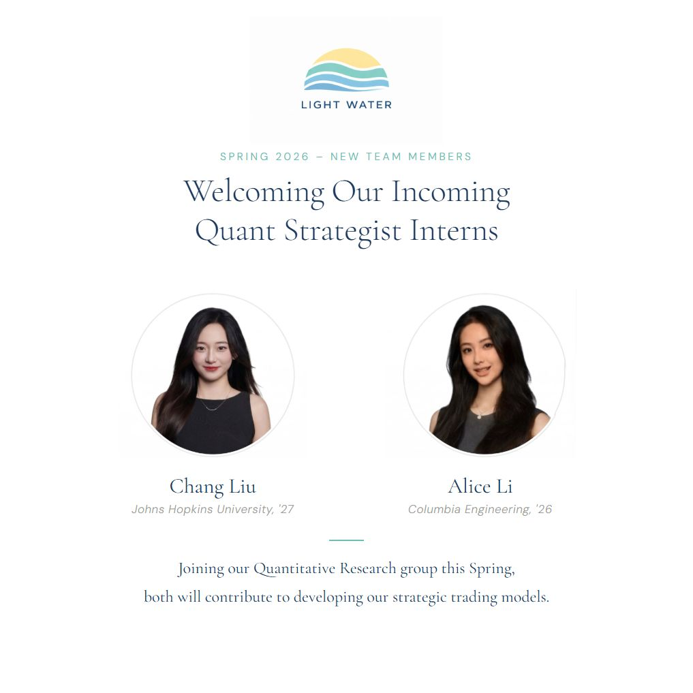

We're pleased to announce that Chang Liu and Alice Li are joining Light Water Capital this spring as Quant Strategist Interns.
Chang comes to us from Johns Hopkins University, where his work in applied mathematics and computational modeling caught our attention. Alice joins from Columbia Engineering, bringing a background in quantitative methods and data-driven analysis. Both stood out not just for technical ability, but for the kind of independent thinking that fits how we work.
Why Internships Matter to Us
Light Water is a small firm by design. We don't hire for headcount - we hire for impact. When we bring someone onto the team, even for a few months, it's because we believe they'll contribute meaningfully to our research infrastructure and investment process.
Internships at Light Water aren't observational. Chang and Alice will work directly on quantitative strategy development, contributing to the same research pipeline that drives our investment decisions. They'll have access to our full toolset - including July Backtester, our open-source backtesting engine - and the autonomy to pursue questions that interest them within our research framework.
What They'll Be Working On
Our Quant Strategist Interns sit at the intersection of research and implementation. The role involves developing and testing quantitative strategies, working with real market data, and contributing to the tools and infrastructure that support our investment process.
Specifically, they'll be involved in parameter optimization, signal research, and strategy validation - work that requires both technical rigor and market intuition. The best quantitative research isn't purely mathematical. It requires understanding why a relationship might exist, not just that it does.
Building the Team
This is part of a broader effort to grow thoughtfully. We're expanding our quantitative research capabilities because the opportunity set demands it. Markets are getting more complex, data sources are multiplying, and the edge increasingly belongs to teams that can process information systematically while maintaining the judgment to know when the model is wrong.
Chang and Alice represent the kind of talent we want to develop relationships with early. If the internship goes well - and we expect it will - this could be the beginning of a longer collaboration.
We're looking forward to what they bring to the team.
Leave a comment - join the conversation
Share your thoughts, questions, or insights on this article. We'd love to hear your perspective.
Comment on LinkedIn